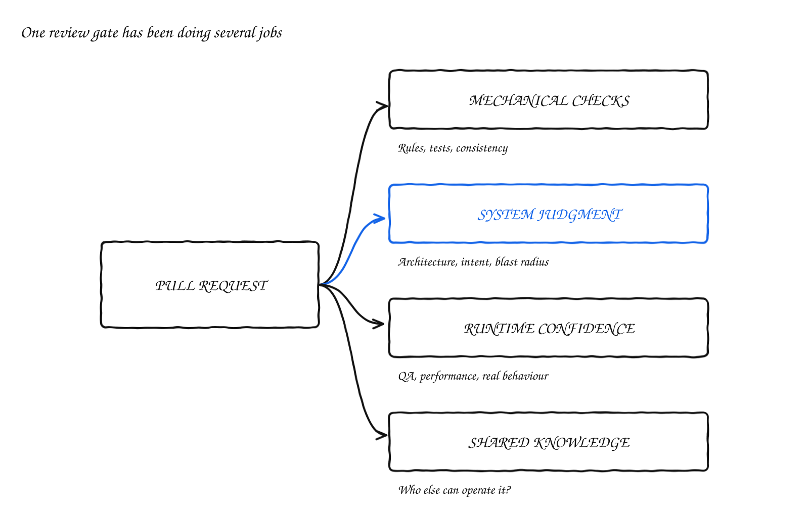
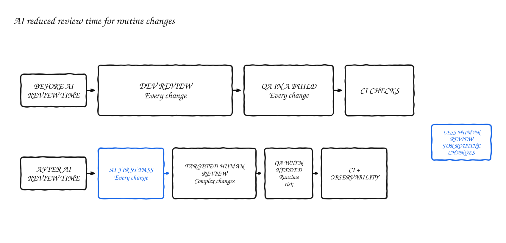
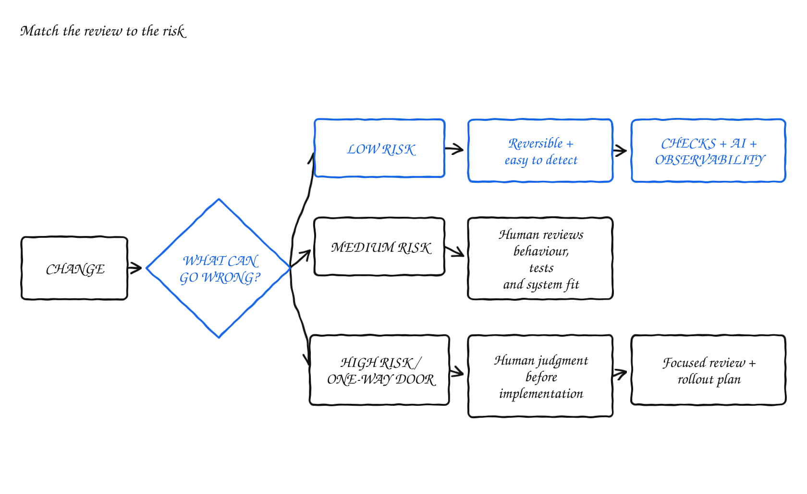

Before You Remove Code Review, Name the Risk It Controls
AI can produce pull requests faster than engineers can review them. That does not necessarily mean code review is obsolete. It may mean we have spent years asking one process to control too many different risks.
Some review comments are mechanical and should have been automated already. Others depend on product intent, architecture, operational context or knowledge that has never been written down. Treating those as the same activity made review inefficient before AI. The current volume of generated code has made that inefficiency impossible to ignore.

In What is happening with code reviews?, Gergely Orosz describes several ways teams are adapting. Some use AI to review every change and ask humans to review the AI's findings. Others require human review only for changes with a large blast radius. Some review the plan, tests or database schema instead of reading the implementation line by line. A few are trying to remove human review almost completely.
I recognise the problem. At Decentraland, we tried several versions of the review process for the Unity Explorer. The useful lesson was not that one of them was the answer. Each version made a different tradeoff between speed, confidence, knowledge and ownership.

One gate was doing several jobs
Our more traditional process required a developer review, QA approval and green automated checks before a pull request could merge. The developer looked at architecture, correctness and how the change fitted the wider system. QA followed test instructions from the pull request and verified the change in a build.
That process provided several kinds of assurance, but it also treated very different changes in roughly the same way. A small maintenance fix could wait for the same categories of approval as a change to scene execution, multiplayer or memory management. The cost was not only the time spent reviewing. Work also stopped while the right people became available.
It is tempting to describe that delay as waste. Sometimes it was. But the reviews were also compensating for weaknesses elsewhere in the system.
In one team snapshot, every respondent said expert code review gave them confidence when shipping. Almost everyone also relied on testing in the Unity editor and in a built client. Far fewer trusted the automated unit-test coverage.
Removing human review in that environment would not simply remove a redundant gate. It would remove one of the controls engineers actually trusted before the alternatives were ready to replace it.
This is the first question I would ask before changing a review process: what is the review compensating for today?
It may be weak automated coverage. It may be concentrated knowledge, unclear architecture or poor observability. It may be that the written requirement does not describe the behaviour precisely enough for a test to prove it. Removing the wait does not remove any of those conditions.
We added AI without immediately handing it authority
We also introduced Claude as a first-pass reviewer. It reviewed a pull request against the diff and repository-specific architecture guidance. It could flag suspicious complexity, missed tests, consistency problems and patterns that were easy for a tired reviewer to overlook.
That was useful because it made some review work cheaper and more consistent. It did not make every comment useful. AI review can create its own queue of plausible-looking suggestions, each of which costs a human reviewer time and attention. A reviewer who has to verify ten low-value comments may have been better off reading the important part of the change directly.
Context made a large difference. A generic model can comment on C# style. It will not automatically understand why an allocation in a Unity hot path matters, which ECS boundaries the project relies on, or which part of the product is particularly difficult to roll back. The review became more valuable when those constraints were written down and included in the review instructions.
That creates a maintenance obligation. The guidance needs owners. It needs to change with the architecture. The workflow needs monitoring when the model fails, times out or produces an incomplete result.
It also creates a new security boundary. We had to harden the Claude review workflow against prompt injection. This is an easy cost to miss when AI review is presented as adding another pair of eyes. The reviewer is now software with access to repository content and tools. Its permissions, inputs and allowed actions are part of the production system.
AI made part of review cheaper. It did not make the review system free.
Then we started routing changes by risk
A later version treated simple and complex changes differently.
Fixes and maintenance pull requests received an automatic AI review. The reviewer classified the change as simple or complex, identified blocking issues and decided whether QA was required. A simple change that passed could receive an automated approval and no longer needed a separate developer approval. Complex changes still required a human developer. Features and performance work did not automatically enter the same path; an engineer could request an AI review, but the process did not assume those changes were safe because a model had read them.
There were narrower exceptions as well. Trivial maintenance could explicitly skip review, while bot-generated dependency updates used their own path.
This was closer to the right model because it stopped pretending that every pull request deserved the same amount of human attention. But the classification itself mattered. Pull-request size is a poor proxy for risk. So is the amount of code generated by AI.
A one-line permission change can have a larger blast radius than a new internal tool. A small database migration can be harder to reverse than a large stateless implementation. A change in a public protocol can constrain several clients for years. A large refactor behind a feature flag may be comparatively safe if it is observable and easy to disable.

I would assess at least four things:
The last question is easy to lose when code review is discussed only as defect detection.
Code review was also how the team learned the system
Human review distributes context. It shows another engineer why a decision was made, where the surprising dependency lives and which part of the code deserves caution next time. It gives less experienced engineers examples of judgment that a style guide cannot capture.
This was particularly important in a large real-time client. Some areas had knowledge concentrated in one or two people. Engineers identified scene loading, multiplayer, avatars, SDK bindings and media as recurring risk areas. In that environment, asking whether an AI reviewer can find bugs is only part of the question.
If nobody else needs to understand the change before it merges, who will understand it when the author is unavailable and the system fails in production?
This does not mean every change needs a second engineer reading every line. It means that removing review also removes a knowledge-sharing mechanism. A team may replace it with pairing on high-risk work, design reviews, post-merge walkthroughs, stronger ownership documentation or rotations through important systems. But it should be a conscious replacement.
Otherwise, AI increases the amount of code while quietly reducing the number of people who understand it.
Some risks do not belong in code review
Our experience also showed the opposite problem: asking code review to catch failures it was not suited to catch.
The Explorer runs code, assets and user-created content inside a real-time performance budget. A pull request can be well structured and still produce an unusable result once the client loads a heavy scene, renders many avatars or handles unpredictable content. A reviewer cannot reliably infer all of that from a diff.
Those risks need different controls. QA tested runtime behaviour in a built client. Performance work required before-and-after evidence. Asset-bundle conversion used automated visual comparison so a broken conversion could be rejected before upload. Production telemetry and feature flags helped detect and limit failures that escaped earlier stages.
The point was not to accumulate as many gates as possible. Each control needed a failure it was capable of detecting.
Static checks are better than humans at enforcing deterministic rules. AI is useful for pattern discovery, context compression and finding suspicious omissions. A domain expert is still better placed to judge whether a change fits the architecture and intended product behaviour. QA can assess flows and experience that are difficult to encode in unit tests. Observability and rollback reduce the impact of what none of them catches.
Once those responsibilities are explicit, review can become smaller without becoming careless.
Replace the review checklist with an assurance model
I would not set one code-review policy for an entire engineering organisation. I would define a small number of risk paths.
Low-risk, reversible changes can rely on deterministic checks, AI review and good post-merge detection. Medium-risk changes may need a human to review behaviour, tests and system fit without reading every generated line. One-way doors such as authentication boundaries, destructive migrations, public APIs and protocols deserve human judgment before implementation as well as focused review afterward.
The exact categories will differ by product. A database schema may be the main one-way door in a SaaS startup. In a real-time client, memory use, frame time, content compatibility and rollout behaviour may deserve equal attention.
The process should also be measured by the decisions it improves, not by how much review activity it produces. Which defects are caught before release? Where do rollbacks and incidents originate? Which reviews repeatedly find nothing? How long does it take someone other than the author to understand and operate the changed system? Where is review blocked on one expert?
A gate that no longer catches meaningful problems becomes delay dressed as safety. But removing it without replacing the risk it controlled is not efficiency. It is an unowned change to the operating model.
Before removing human review, I would make five things explicit:
The useful question is no longer whether humans or AI should review the code. It is which evidence we need before taking a particular risk, which control can produce that evidence, and who is accountable when the evidence is wrong.